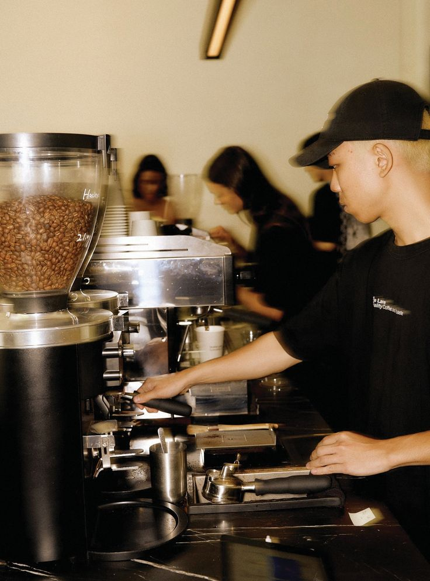

Our Origins
We believe in ethical sourcing, quality beans, and community-centered service. Founded in 2020, Kape Pa More started as a small neighborhood café and has since grown into a beloved local chain.
We are committed to sustainability and supporting coffee farmers around the world. Our menu features a variety of blends and single-origin coffees, as well as delicious pastries and comfort food.- Arabica
- A smooth and aromatic coffee variety known for complex flavor notes.
- Robusta
- A stronger coffee variety with higher caffeine content and bold taste.
- Fair Trade
- A sourcing practice that ensures farmers receive fair wages and ethical working conditions.
Our Team

- Manager (manager@kapepamore.com)
- Barista
- Intern